Building the X2: USB external drive enclosures
The first shipment of parts for the X2 arrived today in a giant box. After checking the contents of the box against the packing list, I opened the Vantec NexStar 3 USB external HDD enclosures (two black, one red) and the Seagate 500GB IDE HDD I'd ordered. Here's the red enclosure and the HDD in an unopened state:
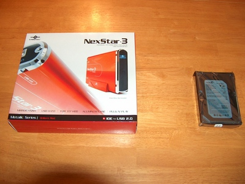
Unpacking the contents of the NexStar 3, I found the drive enclosure itself, a useless driver CD-ROM, a little baggie with appropriate screws, a USB cable, a plastic "Playstation2" style vertical stand, and a power supply.
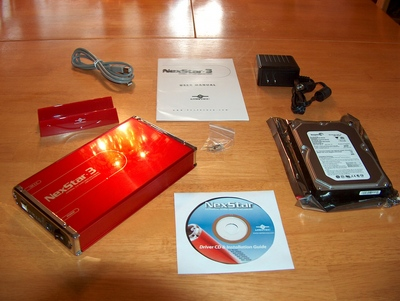
The power supply's transformer is large and oddly-shaped, so that it tends to block spare outlets—even on power strips with several "transformer-spaced" sockets. No big deal, but it's an annoyance.
First, I used a small pair of pliers to change the jumper on the back of the drive to MASTER:
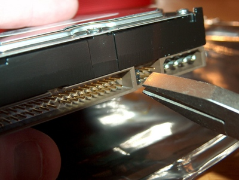
Then I connected the enclosure's IDE and power cables to the drive:
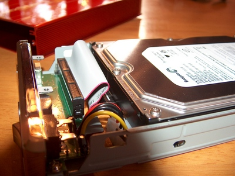
I carefully folded the short IDE cable so that it would not crimp when the case was closed, and then mounted the drive inside the enclosure with the provided screws:
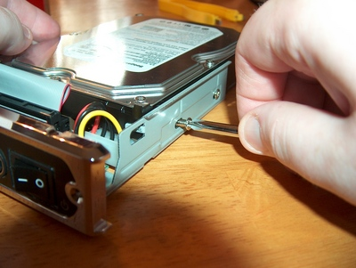
Then I attached the LED cable (not shown) and closed up the case:
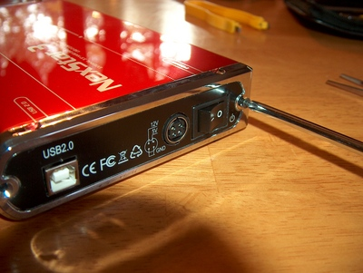
(The shadow in the lower left corner of some of these photos is the camera's giant zoom lens blocking the light of the flash. HP cameras are such crap—I'm only using THIS one because my OTHER HP camera only works intermittently—because, once again, HP cameras are crap.)
Here's the completed drive!
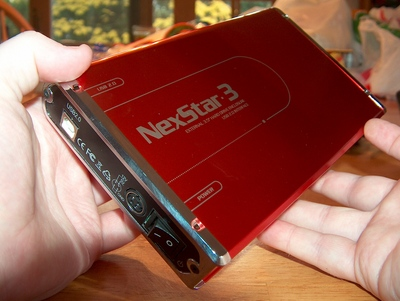
I plugged it into my USB hub and turned on the power. The power/activity LED is very bright!
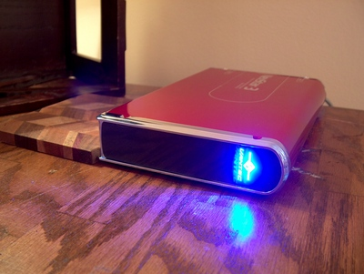
Within a few moments Linux had detected the drive:
Nov 8 14:23:30 monad kernel: usb 4-4.2: new high speed USB device using ehci_hcd and address 49 Nov 8 14:23:31 monad kernel: usb 4-4.2: configuration #1 chosen from 1 choice Nov 8 14:23:31 monad kernel: scsi11 : SCSI emulation for USB Mass Storage devices Nov 8 14:23:36 monad kernel: scsi 11:0:0:0: Direct-Access ST350063 0A 3.AA PQ: 0 ANSI: 0 Nov 8 14:23:36 monad kernel: sd 11:0:0:0: [sdb] 976773168 512-byte hardware sectors (500108 MB) Nov 8 14:23:36 monad kernel: sd 11:0:0:0: [sdb] Write Protect is off Nov 8 14:23:36 monad kernel: sd 11:0:0:0: [sdb] 976773168 512-byte hardware sectors (500108 MB) Nov 8 14:23:36 monad kernel: sd 11:0:0:0: [sdb] Write Protect is off Nov 8 14:23:36 monad kernel: sdb: unknown partition table Nov 8 14:23:36 monad kernel: sd 11:0:0:0: [sdb] Attached SCSI disk
I had expected to see "unknown partition table", because the drive is unformatted. I used cfdisk to create a new partition table, with one big 500GB partition. At that point, /dev/sdb1 showed up in /var/log/messages. So I created an XFS filesystem on the disk:
/sbin/mkfs.xfs /dev/sdb1
I did a test mount and copied some large files to/from the drive. Seems quite snappy!
Now I had to build two more NexStar enclosures to accommodate the original Pod's existing RAID array, which is being moved into the server room in order to make room for the X2's larger SATA array.
These IDE disks hold several years' worth of audio work. Here's a photo of the drives in their old CoolerMaster internal 5.25" bay enclosures, sitting next to their new homes before installation:
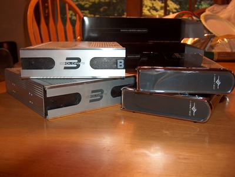
I did the same routine twice over again for these disks. Don't forget the crucial MASTER jumper setting on each drive, or you'll have to take apart the entire enclosure.
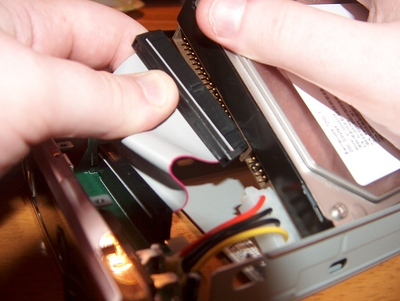
Here's the completed stack of drives:
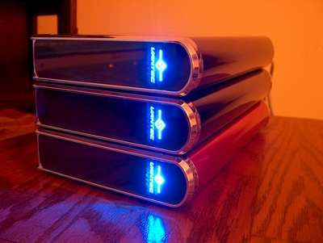
Because the two black enclosures were made with drives from an existing Linux Software RAID setup, all I had to do was tell mdadm where to find the drives in /etc/mdadm/mdadm.conf. However, USB Mass Storage devices don't always have the same device files; sometimes it's /dev/sdb, other times /dev/sde, depending on the order things were plugged in. Luckily, mdadm can scan for attached RAID arrays, and tell you their UUIDs:
monad:~# mdadm --examine --scan ARRAY /dev/md0 level=raid1 num-devices=2 UUID=ae06d67d:e7fff002:b4843d7b:cea3c2d9
I pasted that output into /etc/mdadm/mdadm.conf, and then brought the array up:
monad:~# mdadm --assemble --scan mdadm: /dev/md0 has been started with 2 drives. monad:~# mount /md0 monad:~# ls /md0 album1797.wav cam export.wav mickslow.wav pd zoom archive drop fedora-iso mountain_music samples archive2 dto-BIGBACKUP.tar.gz insanity ogg sessions ari ecaspace jams oldies tmp backups elysiumbeat.wav jennytruth osb-1-silver wikinews boston-tracks export3.wav lost+found other_music yes-live-74 monad:~#
(NOTE: In my /etc/fstab, the mount point for "/dev/md0" happens to be "/md0"—you can mount it wherever you like.)
Much more to come when "Building the X2" continues tomorrow!